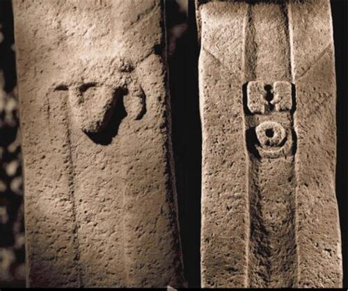
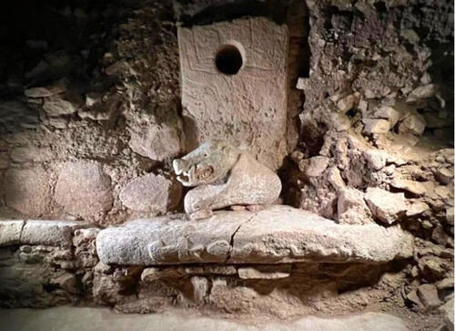
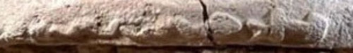
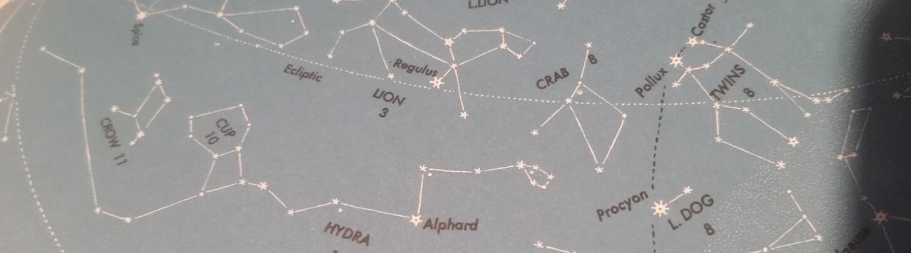
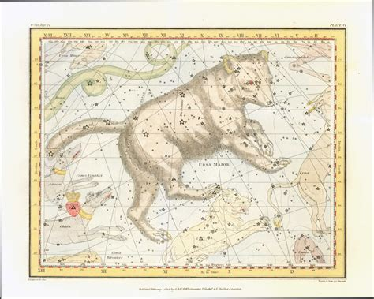
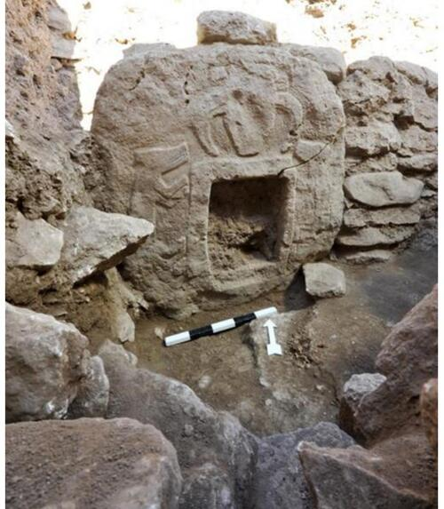
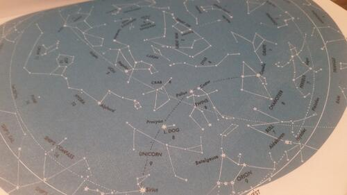
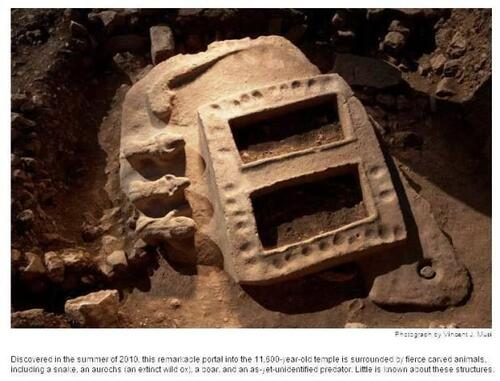

From our previous post, we've seen how the constellation Gemini seemed to be especially important in a mythological context. Here we will begin to establish a sort of interpretive guide, starting with Gemini and at Gobekli Tepe. The site in Turkey is well known for its T-shaped pillars that in many instances are representative of people. It also has multiple enclosures, some of which have two larger pillars surrounded by eleven smaller pillars. The pillars tend to be much wider on one side than the other. Often, down the length of the wide sides are carved arms that wrap around onto the narrow side and terminate in hands as seen below.

It may be assumed that the pillar on the left is likely a male figure by its loincloth and the figure on the right is a female based on the circle and curve below the hands. Take a look at the hands in particular. Don't they resemble two figures reaching out to each other? It's like handception...hands within hands. Two figures whose hands are being held resemble a particular shape, the shape of an "H".
But does an "H" signify the constellation Gemini? We've those notorious H-blocks of Puma-Punku, but we aren't going there today. We're staying deeper in the past at the approximate twelve thousand year mark. Gemini being an "H" might be a crazy leap, but let me show you something.

Above is a picture of a bench at Gobekli. There are a few things to note. Along the front edge, there's an "H", a snake head wide open, and a serpent heading towards the "H" through the snake head. That's a bit odd. Above that, there's a lovely three-dimensional boar, and above and behind the bench is a flat surface with a fair sized round hole and some 'squigly' lines coming from it. Also on the surface of the bench, you can just make out a small snake on the far right, and there's also two masks or faces carved into it as well, presumably on the surface. I say presumably as this is the only image I can find of this.
Now if we were to view the face of the bench from a superior position, it would look like this :

Now compare that to this image from H. A. Rey's book :

See anything of note? Like the constellations of Hydra, Cancer (looking like a snake head) and Gemini in a line just like they are portrayed on the bench? Yet we can go a bit further. The boar, do we know of that constellation? Indeed we do, but we call it Ursa Major these days. Not much of a stretch there. It used to be drawn with its face on the right and looking downwards towards Gemini, like this.

So we've actually four constellations carved into stone at thier relative positions 12,000 years ago. A bit amazing, isn't it? As for the hole and the lines above, I'd say the hole actually represents the celestial pole since it is above the boar. The lines? Not sure on that. I've a few ideas, perhaps at a later time.
Four depictions...can we do more regarding Gemini? Actually we can. Remember Gemini can be seen as a portal. A gateway for the sun.

Here we have a square hole with a border, making it a portal. Of note around it are an auroch (a type of ox or bull), a canine, and what looks to be something like a boar. Now if you look again at the stars :

You might notice something very interesting. We have the canine constellation Sirius, looking at Gemini. We have Taurus, the bull, looking at Gemini. We've a boar, or Bear looking at Gemini. We can assume that perhaps Hydra isn't carved here because it was at ground level. Also note that of these constellations, they are presented in the same order around Gemini. Taurus is opposite (presumably) Hydra (not pictured) and Sirius is opposite the Boar. As above, so below on the stone.
And how about one more? Here the portal has a cross-sectional piece :

Are we sure this is Gemini as a gate? I'd say so...top-down, we have the Hydra the serpent, Taurus, a Boar, and a new constellation...I initially thought it was Sirius like before, but it has more feline features..a lion perhaps? Look at the constellation image above again and note that Leo, the lion is ALSO looking at Gemini.
So, in these few images we've noted the following constellations carved into stone which are basically the same as they are today.
- Gemini
- Ursa Major
- Cancer
- Hydra
- Taurus
- Sirius
- Leo
- The celestial pole
That's eight! Coincidence? Doubtful. Quite phenomenal really. And we haven't even touched on the popular favorite yet, Pillar 43, the Vulture Stone. That will be the next post!